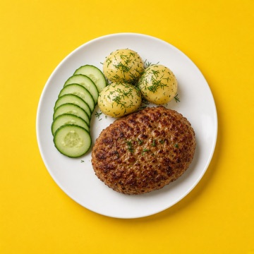

Kutse Taldrikusse
Sind kutsutakse Taldrikusse: sama nädala menüü ja ostunimekiri kogu pere telefonides.
Ava Taldrik
Taldrik avaneb ja küsib, kas liituda perega.
Pole veel Taldrikut?
Laadi see TestFlightist. Siis tule tagasi sellele lehele ja vajuta "Ava Taldrik".
Laadi TaldrikKui Taldrik ei avanenud
- Kopeeri kutse link.
- Ava Taldrik.
- Vajuta "Liitu perega" (avalehel või Seadetes pere all) ja siis "Kleebi".
Kopeeritud. Ava nüüd Taldrik.
Selles lingis pole kutset
Palu pereliikmel saata uus kutse: Taldrik > Seaded > Pere ühes äpis > "Kutsu" sinu nime juures.